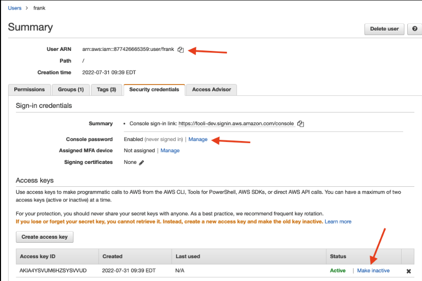
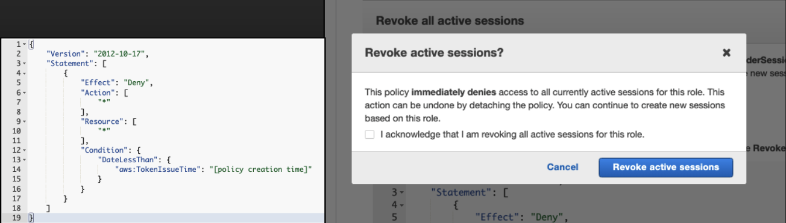

AWS detect and response
Prepare
Logging
Variety of service that relate to AWS logging: (stubs)
[GuardDuty]
[CloudTrail]
[EC2 Logs]
[Amazon VPC log]
[Lambda log]
[CloudFront log]
[RDS log]
[CloudWatch]
Security Account, Security Contact & Root Email
Security Account
- Have a Security Account, as per AWS best practice.
- Have an responder role account, with permission to run containment actions
- Do not use these account for security engineering activities
Security Contact
AWS will send critical abuse and security notices to the root email address on the account. So establish a cloudsecurity-alerts distribution list for your company and set that as the Security Contact in all your AWS Accounts. AWS now allows you to do that via the API.
Asset Inventory and CMDB
You must have the ability to view you asset inventory. is the asset prod/ testing? is there any PII? contact person for the asset? All of this is the critical business context that AWS cannot provide.
chris have a script to pull using steampipe.io and send to splunk
Correlate
You must have the ability to search and correlate AWS logs, on-prem, VPN logs, SSO logs, etc. This usually comes in a form of SIEM, or log management.
There are myriads of way of doing SIEM and AWS, one from Chris Farris
graph TD
CloudTrail --> S3 --> AWS_SQS --> SIEM
GuardDuty --> EventBridge --> Lambda --> SIEM
CMDB/steampipe --> SIEM
SIEM --> AWS_Detective
SIEM --> Analyst
AWS_Detective --> Analyst
OtherLog/VPN/SSO --> SIEMOther Tooling
- VPC FlowLogs will help you understand the network plane stuff. Who is coming and going from your castle?
- Preparing to conduct an EC2 or Container forensic operation is best done before you need to do that.
- Detective is a managed capability from AWS to help you understand and investigate events, but it’s pretty expensive. This is useful if you don’t already have the tooling to help
- Macie is great for finding the PII in your environment. Chris Farris Macie.
Detect and Analysis
A high level flowchart of detect and analysis
flowchart TD
A[Event] --> B[what the event about?]
B --> |Resources| C[investigate resources]
B --> |Identity| D[investigate identity]
B --> |IP| Y[investigate IP]
C --> E[who created the resources]
E --> F[delete resources]
E --> D
D --> G[what action identity did]
G --> H[identity create resources?]
H --> |Yes| F
G --> I[identity pivot or create identity]
I --> D
Y --> J[do other identity using this IP]
J --> D
D --> K[do identity use other IP]
K --> Y-- Chris Farris, with changes
read more on ARN here: [[AWS ARN Explained Amazon Resource Name Guide]] (stub)
Lateral Movement
Movement can be cloud to cloud (AssumeRole), cloud to ground (EC2/ Compute Engine), or ground to cloud see more on [[Cloud Detection Catalogue]]
lateral movement query example
index=cloudtrail eventName=AssumeRole OR StartSession OR SendCommand OR SendSSHPublicKey
| stats count by eventName, userIdentity.arn, sourceIPAddress
(stub) [[Lateral movement risks in the cloud and how to prevent them – Part 1 the network layer (VPC) Wiz Blog]] [[EC2-Instance-Connect Lateral Movement Strategy for Data Exfiltration]] [[How to Compromise AWS Using the Metadata Service - risk3sixty 1]]
Identify initial access
One key thing you’ll need to do as part of containment is to figure out how they got in in the first place. If it was leaked keys to GitHub, that’s easy. If attacker exfiltrated the credentials from an EC2 instance or container due to an application issue, that will be a bit harder to find.
With EC2 Instance Roles, the Instance ID is part of the Role Session Name, which may help you.
But if you can’t find the initial vector, you’ll play wack-a-mole with containment, or you’ll have to be more impactful with the containment policies you apply. This is one reason that best-practice is to have one role per resource or app (the other is to maintain least-privilege).
Containment and Eradication
Access Key
Disable Access Key
The Quarantine Policy isn’t enough. You want to disable the key ASAP! Note: you want to disable the key, don’t delete it. You may not know the service impact of disabling the key at the outset of the incident. You may need to re-enable it to recover from a service impact.
responder role should have this permission [[AWS detect and response#Security Account, Security Contact & Root Email]]

Revoke Active Session
Temporary credentials that Lambda, EC2 Instances, and Containers use, you need to invalidate the compromised credentials. Via the AWS console, you can say, “Deny everything for all sessions created before X date-time”.
attackers may be able to use the same exploit again if you don't know initial access.

Deny Policy
Based on your needs, either deny everything (broke Prod) or pick allow with developer help.
"Version": "2012-10-17",
"Statement": [
{
"Effect": "Deny",
"Action": ["*"],
"Resource": ["*"]
}
]
}
{ "Version": "2012-10-17",
"Statement": [
{
"Effect": "Deny",
"NotAction": ["THINGS YOU NEED"],
"Resource": ["*"]
}
]
}
Apply IP Address Condition
Another alternative is to limit the use of the credentials to a handful of known and trusted IP addresses. This can reduce the service impact while also limiting your attacker’s ability to use the credentials.
{
"Version": "2012-10-17",
"Statement": [
{
"Effect": "Deny",
"Action": ["*"],
"Resource": ["*"],
"Condition": {
"Bool": {"aws:ViaAWSService": "false"},
"NotIpAddress": {
"aws:SourceIp": ["192.0.2.0/24","203.0.113.19/32"]
}
}
}
]
}